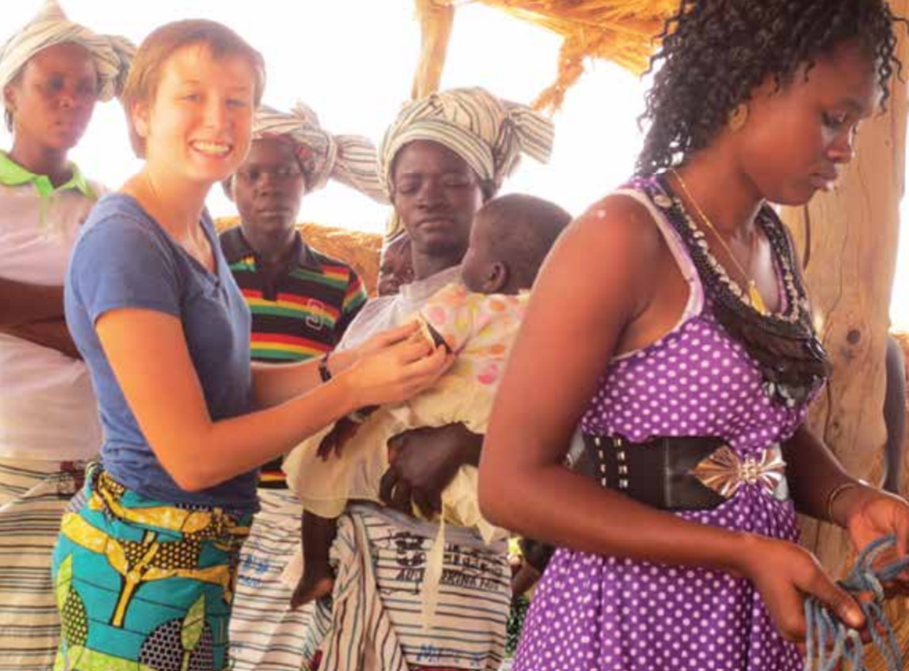
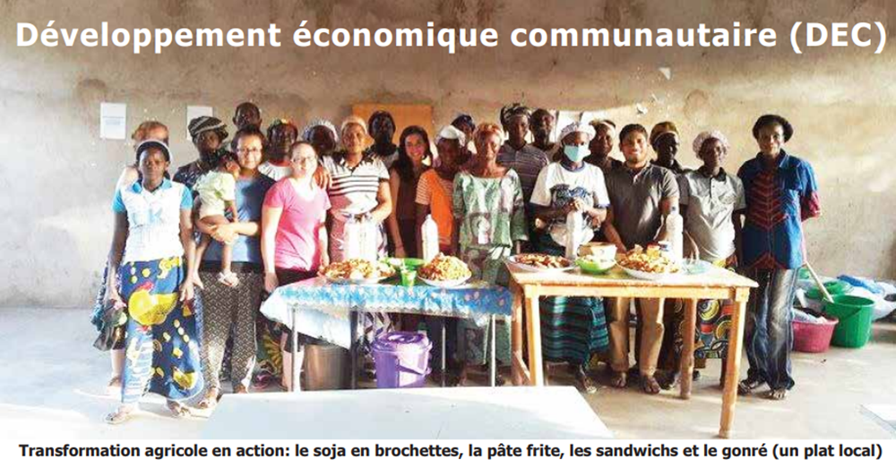
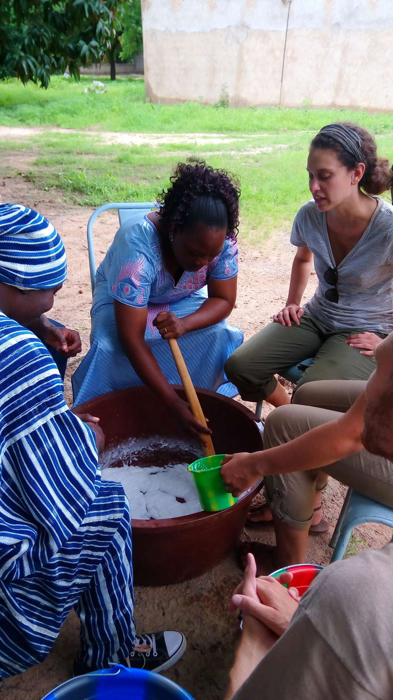
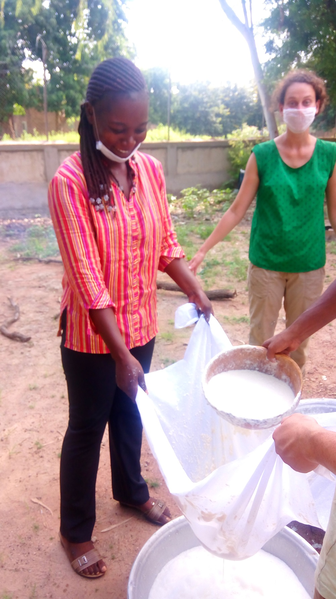
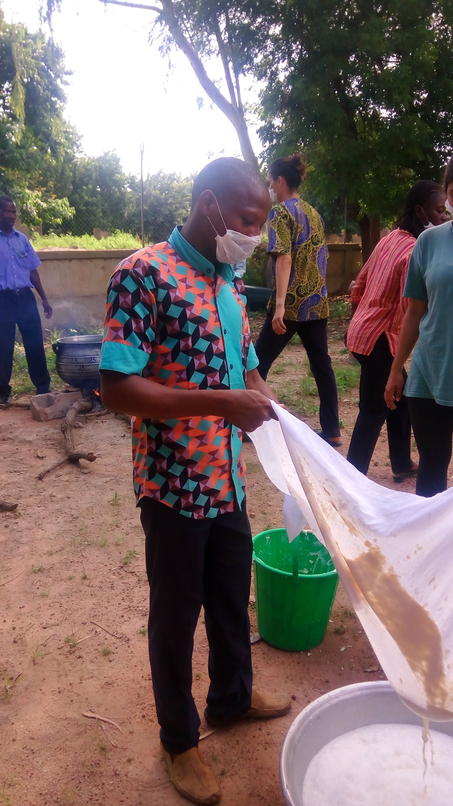
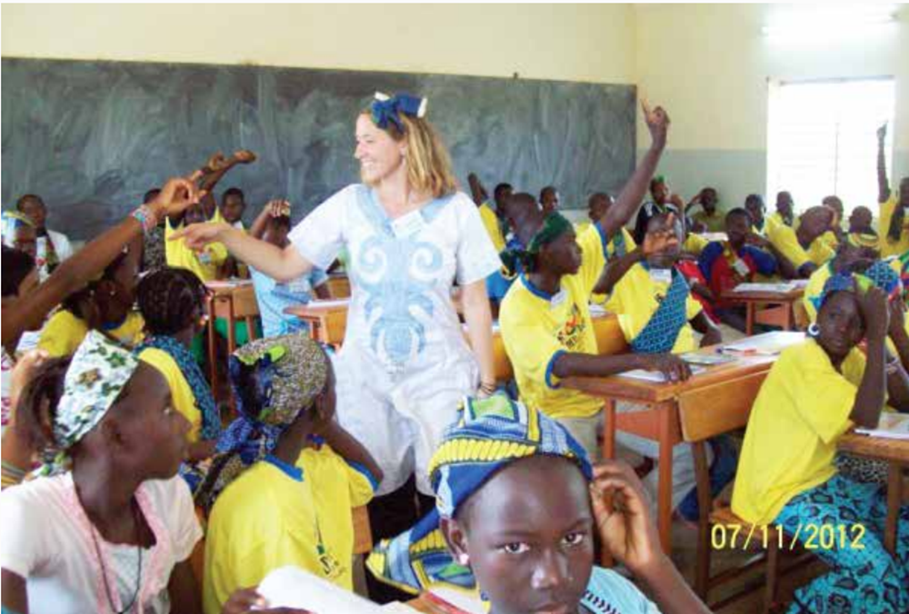

A propos du Corps de la paix
Le Corps de la Paix est une agence du Gouvernement des États-Unis. Le Corps de la Paix est arrivé au Burkina Faso, alors
appelé Haute Volta, en 1967 et a fonctionné sans interruption pendant 21 ans. Les principaux projets durant cette période
comprenaient l'extension forestière, l'éducation des jeunes agriculteurs, le développement des petites entreprises, l'enseignement
secondaire (mathématiques, sciences et anglais), la construction de puits, l'agriculture et l'environnement, les arts
et l'artisanat. En 1987, le programme du Corps de la Paix a été suspendu en raison de changements politiques locaux, mais
en 1995 le nouveau gouvernement a demandé le rétablissement du programme. Le programme a été relancé avec un
groupe de 17 Volontaires de Santé Publique, qui ont commencé leur service au Burkina Faso en décembre 1995. Puis le
Corps de la Paix a fonctionné jusqu'à l'évacuation de ses Volontaires en septembre 2017 avec 124 Volontaires dont trois
Volontaires d’Intervention du Corps de la Paix au Burkina Faso. Ils travaillaient dans les domaines de la santé communautaire,
du développement économique communautaire (DEC) et de l'éducation. Au total, plus de 2 100 Volontaires ont servi
au Burkina Faso depuis que le Corps de la Paix a ouvert son programme en 1967. Les Volontaires du Burkina Faso ont été
placés dans des communautés hôtes dans 12 régions du pays et ont travaillé pendant deux ans avec des partenaires pour
développer des solutions locales aux besoins locaux. Dans leur principal secteur d'intervention, de petits projets ont été mis
en œuvre dans les sites assignés sous l'initiative et le leadership de la communauté, en mettant l'accent sur la durabilité.
Le Corps de la Paix / Burkina Faso intervenait dans trois secteurs programmes à la date de la
Suspension de 2017:
- La Santé communautaire,
- Le développement économique communautaire
- L'éducation
La Santé communautaire
Le programme de santé communautaire reposait sur la participation active des parties acteurs du Ministère de la Santé, des responsables régionaux et locaux de la santé, des représentants des communautés,
des ONG partenaires et des Volontaires du Corps de la Paix. Le projet a été conçu pour répondre aux
besoins et aux priorités du pays en matière de santé, y compris la prévention du VIH/SIDA; la réduction
des grossesses chez les adolescentes; la promotion de la nutrition; l'assainissement de l'eau et l'amélioration de l'hygiène; la promotion de la planification familiale; et la prévention du paludisme. La durabilité
des activités du projet est renforcée par le renforcement des capacités des prestataires de soins de santé
pour améliorer l'état de santé de la population, en particulier chez les mères et les enfants de moins de
cinq ans. Les Volontaires de santé communautaire travaillent principalement en étroite collaboration avec
le personnel des dispensaires locaux pour sensibiliser les populations locales sur des sujets tels que la
santé maternelle et infantile, le paludisme, l'hygiène, la nutrition, la planification familiale et le VIH /
SIDA.
Le programme de santé communautaire visait trois objectifs:
- durabilité
- Favoriser l'amélioration de la santé maternelle, néonatale et infantile
- Promouvoir une vie saine

Séance de sensibilitation au Centre de santé
Le développement économique communautaire
Le programme DEC, initié en octobre 2013, est issu du projet Développement de l'agriculture, de l'environnement et des capacités commerciales (DABA). Après avoir évalué les besoins avec les acteurs à tous
les niveaux (membres de la communauté, partenaires gouvernementaux, ONG), il est devenu évident que
le projet devait être recentré sur des activités génératrices de revenus à petite échelle et sur la gestion
des entreprises ainsi que la sécurité alimentaire. Le projet DEC a été conçu pour aider les groupes d'agriculteurs ruraux et de petite taille à améliorer et à soutenir leurs entreprises agricoles. Les Volontaires de
DEC aident les agriculteurs à accroître leurs compétences et leurs connaissances en affaires dans le but
de développer des activités rentables et durables comme les jardins, les jardins boisés, l'élevage et la
transformation des récoltes en produits du marché.
Le programme de développement économique communautaire visait deux objectifs:
- Améliorer l'efficacité des entreprises et la rentabilité pour les organisations agricoles
- Augmenter le revenu des petits exploitants agricoles

Séance de mise transformation de produits agricoles

Séance de mise transformation du soja en brochettes

Séance de mise transformation du soja en brochettes

Séance de mise transformation du soja en brochettes
L'éducation
Le programme Education a été développé en 1997, en réponse à une demande d'assistance du gouvernement Burkinabè, et s'aligne sur les priorités éducatives du pays. En 2012, le gouvernement du Burkina Faso
a établi une stratégie décennale d'éducation visant à améliorer l'accès et la qualité de l'éducation, à
augmenter le nombre d'établissements préscolaires et à promouvoir une éducation bilingue axée sur la
langue locale au cours des premières années scolaires et la mise en œuvre progressive de l'enseignement
de l'anglais dans les écoles primaires. En conséquence, le Projet Éducation a recentré ses activités en 2013
pour inclure l'éducation de la petite enfance, l'alphabétisation des enfants et le TEFL. L'enseignement des
mathématiques et des sciences a été abandonné en 2015, mais à la demande du gouvernement, il a été
réintroduit en 2017. Les Volontaires de l'éducation ont utilisé des approches participatives axées sur les
élèves pour enseigner l'anglais au niveau secondaire et préscolaire. Les programmes scolaires tels que les
clubs, le tutorat et les camps qui sensibilisent aux compétences de la vie courante et à l'égalité des sexes
ont également été facilités par des Volontaires.
Le programme d'éducation visait à atteindre trois objectifs:
- Augmenter le succès des élèves
- Améliorer l'enseignement
- Améliorer la communauté scolaire

Dans une salle de classe